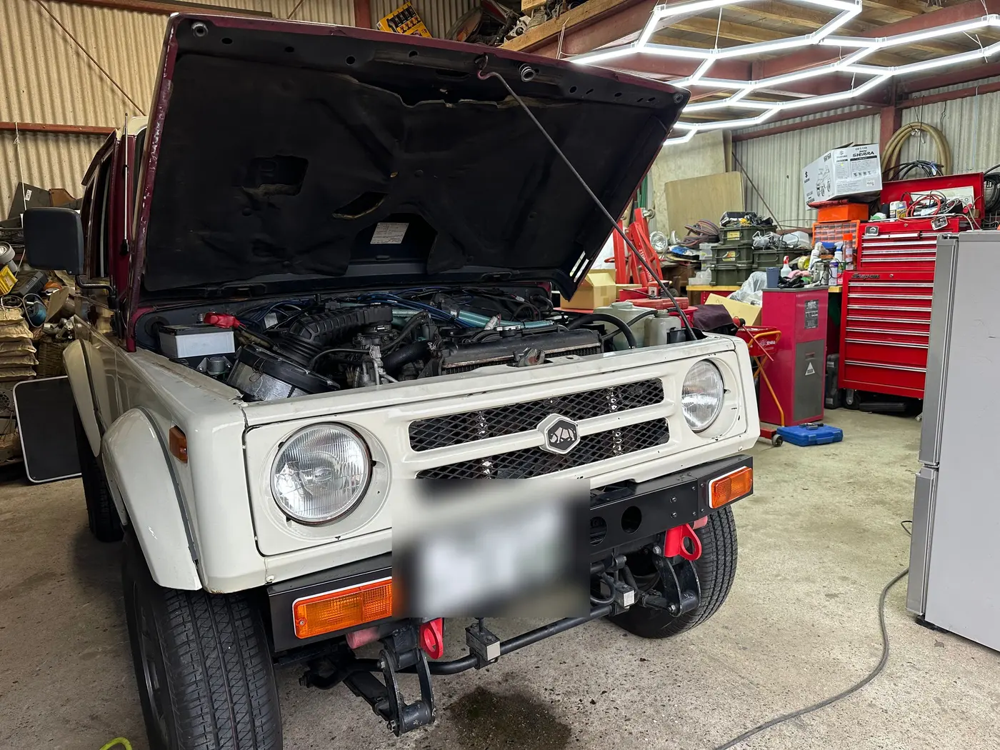

WORK 07
JB31W タイミングベルト・ギアボックスシール交換／リアデフ スパルタンロッカー組み込み
/ 作業事例
整備記録 // JB31W

富山県からお越しいただいたJB31W ジムニーシエラです。 タイミングベルト交換、ステアリングギアボックスのオイルシール交換、リアデフへのスパルタンロッカー組み込みの3つを、まとめて作業しました。
タイミングベルトは、切れるとその場でエンジンが止まってしまう部品です。トラブルが起きる前に、時期を見て交換しておきたい部品です。 ステアリングギアボックスは、オイルシールを新しくしてオイル漏れを止めました。
スパルタンロッカーは、リアデフを降ろし、デフケースの中の純正ギアと入れ替えて組み込みました。 直進時はデフがロックし、曲がるときは内側のタイヤが空転する自動ロック式なので、悪路での走破性が大きく上がります。 舗装路では曲がるときにカチカチと音がしたり、少し独特の動きをすることがありますが、この種類のデフロックの特性です。
- タイミングベルト交換
- ステアリングギアボックスのオイルシール交換
- リアデフを降ろして分解
- スパルタンロッカーを組み込み、組み付け
Nova_83LAB にご依頼いただいた方へ。よろしければ Googleのクチコミ で感想をお聞かせください。